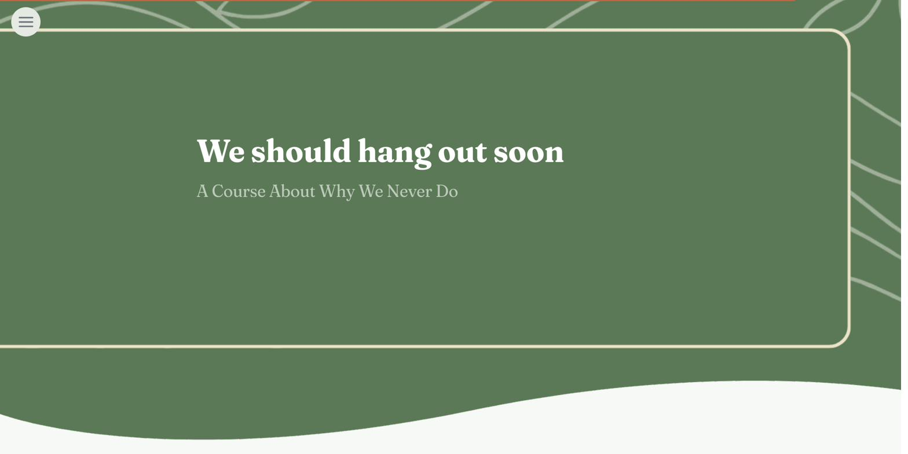

Why We Never Actually Hang Out — And What to Do About It
A scrollable behavioral-science course about the cognitive patterns that quietly kill adult friendships — built for the iSpring Course Creation Contest 2026 and scored a perfect 100.
- Role
- Sole Instructional & Visual Designer
- Timeline
- iSpring Course Creation Contest 2026 (~12 min course, 6 chapters)
- Impact
- Winner · Scored 100% · 1 of 65 scrollable entries · Best Visual Experience nomination · 1,501 participants across 103 countries

"We should hang out soon." Most people say it. Most people mean it. Most people never follow through.
That gap isn't a character flaw. It's a set of well-documented cognitive patterns — the Planning Fallacy, Optimism Bias, the Intention-Action Gap, Temporal Discounting — that quietly work against good intentions. Most people have never heard of any of them. Half of American adults reported feeling lonely before COVID, many with three or fewer close friends (Office of the Surgeon General, 2023). Research on intention-behavior gaps shows more than half of strong intentions never become action (Sheeran, 2002). Not because people don't care — because their brains aren't wired for the follow-through part.
The iSpring Course Creation Contest 2026 asked designers to build something that could actually change learner behavior in under 15 minutes. I wanted to name the patterns behind a near-universal human experience, make them feel recognizable rather than clinical, and give people one small tool they could actually use before they closed the tab.
The central tension was awareness vs. behavior change. Teach the psychology with real citations, but keep it personal and warm enough that someone would want to follow through. Backward design from the intended behavior (a specific if-then plan for one real relationship), action mapping to strip out anything that didn't move learners toward that outcome, and implementation intention research (Gollwitzer, 1999) as the spine.
Six chapters, 48 screens, roughly 12 minutes. Persona flip cards in Chapter 1 that pay off with a callback in Chapter 6. Concept teaching grounded in named cognitive science — Kahneman & Tversky, Weinstein, Ainslie, Hall — with citations woven into the visual design instead of appended as footnotes. A five-question knowledge check to reinforce recall. An if-then planning widget in Chapter 5 that asks learners to type a real commitment while it's fresh — the strongest action moment in the course. A three-slider reflection at the end that measures self-reported confidence and intent to act.
Built end-to-end in iSpring Suite as a scrollable course. The interactive widgets — persona quiz, if-then planner, reflection sliders — went beyond iSpring's native capabilities, so I vibe coded them from scratch using Claude and deployed them as embedded HTML widgets hosted on GitHub Pages. Accessible versions were built alongside every interactive component. Full source rebuild reference for all 48 screens captured before iSpring access ended, so the course can be rebuilt in Rise incorporating judge feedback on measurable objectives and visual consistency.
The course was named a winner in the iSpring Course Creation Contest 2026, scored 100% by the judging panel, selected as 1 of 65 scrollable-category entries, and nominated for Best Visual Experience. The contest drew 1,501 participants across 103 countries.
Judge feedback highlighted the strength of the concept, the pacing, and the behavioral-change payoff — and flagged two areas to sharpen: making the learning objectives more measurable (revised for the Rise rebuild), and consolidating the illustration system, which drifted across multiple visual styles over 48 screens. Both fair. Both actionable.
The biggest craft lesson: for a short scrollable course, the interactive moments have to earn their space. Every widget in the course exists because a passive equivalent wouldn't have moved the learner toward the behavior change. The if-then planner is the whole course's payoff — if it isn't there, the previous 11 minutes are just interesting reading.
What I'd do differently: commit to a single illustration system from screen one. Mixing styles felt like variety in the moment. In review, it read as inconsistency. The Rise rebuild will use one system throughout.